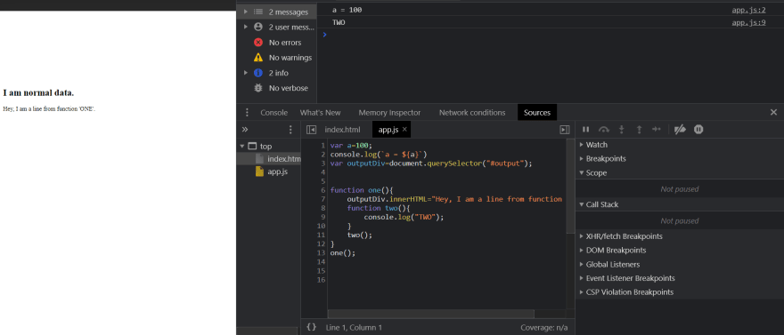
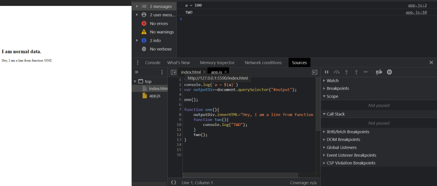
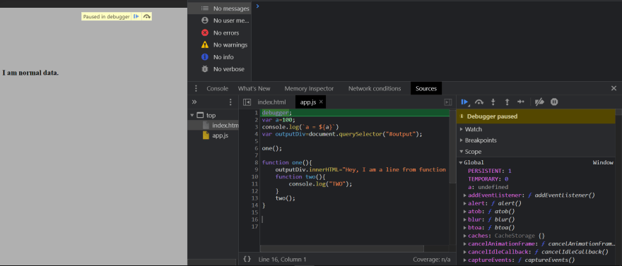
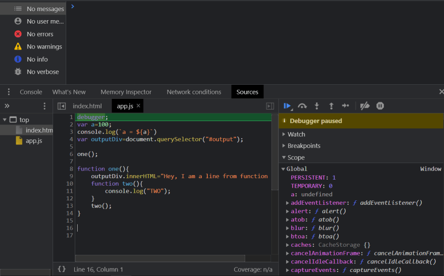
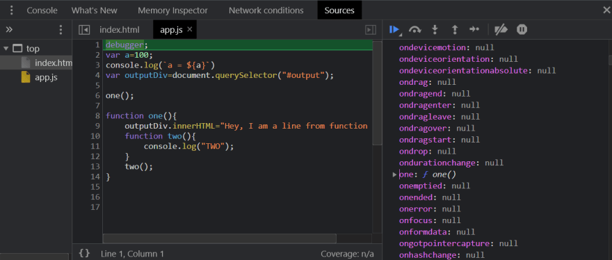
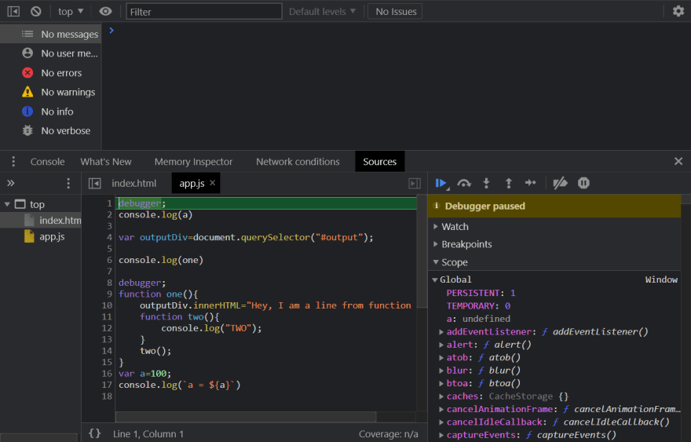
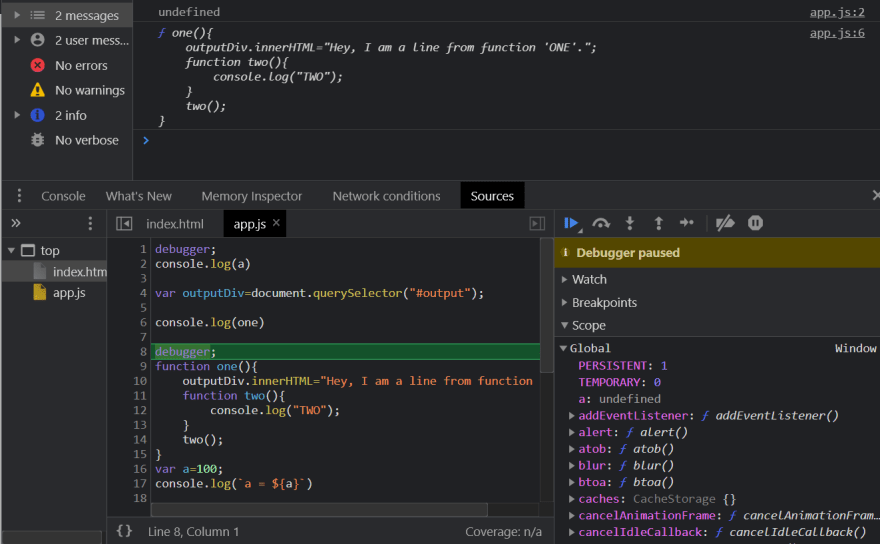
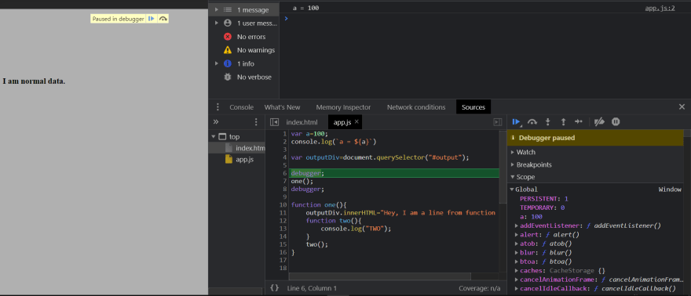
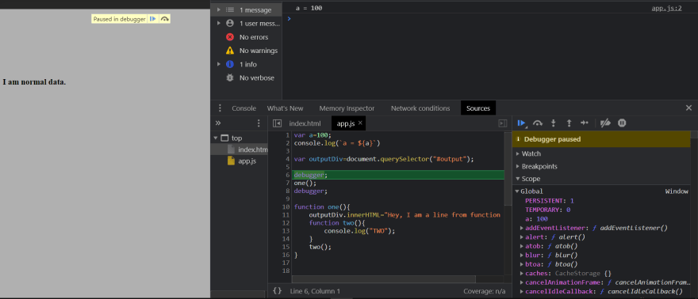
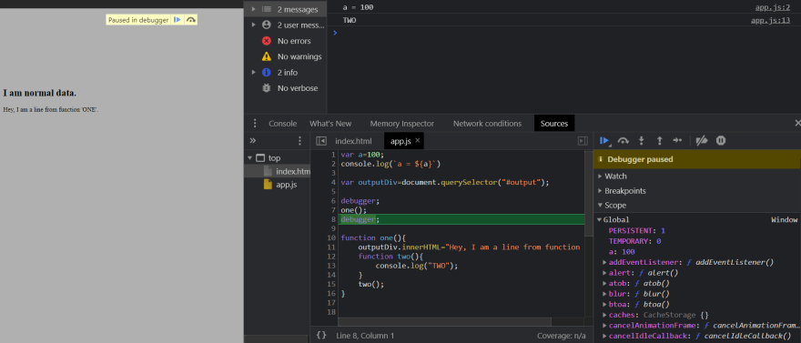

Nikhil Belide 28 Jul. 8 min read.
Interviewer : Can you explain me the concept of Hoisting?
Dev : Sure. Hoisting is a phenomenon in which JavaScript magically🤺 moves the code to the top.
Interviewer :
Can you dive a little bit more deep?
Dev : Sure. Gives an example where we can call a function on a line which is before the function initialization.
Interviewer : Hmm.
I too have seen many tutorials, blogs and sites where they mentioned the same. But programming is not magic. There lies a logic. So, lets actually see how actually HOISTING works.
We know that when we run a script, a Global Execution Context (GEC) is created which consists of two phases. Memory creation phase and Execution phase i.e. run phase. During this memory creation phase all the magic happens.
As soon as we run a script all the all the variables and functions are allocated space in the memory. This happens even before the first line of code is executed. This is the reason we are able to call/access functions or variables on a line which is before their initialization and not face any errors. Don't believe me? Let's see with an example.
Lets run the following code.
Nothing weird right? Now, lets make some changes.
Noticed the change? We called the function before its initialization.
To see what exactly happened lets put a debugger on line 1.
So, we are at line 1 and we haven't executed anything yet. But as we discussed, memory is allocated to functions and variables before the execution phase.
In the above image, notice the Global heading? That is memory.
So, if what I said is true then the memory should show the function and variable now right? Correct.  Observe the above two images, under Global(which is on bottom right) and you'll see a : undefined and one : f one(); and remember we are still at line 1
So, if they are in the memory we should be able to log them as well right? Yes.
Making a few changes and the code now looks like this.
Now, lets log them.
See that? By default variables are given 'undefined' and functions are stored along with their code in memory before script execution phase. That's the reason we see undefined and inner function data in console and that is the reason we are able to access them at lines on code which are before variable initialization or function initialization
For now, lets concentrate on functions and it's hoisting. So, if a function is saved in memory along with the whole code before the run, we will also be able to use them on a line in code before their initialization or anywhere right? Correct.
Lets make the code cleaner and see an example and the HTML code as well.
 

Notice the above data very carefully.
Notice the console, the DOM, the storage and where the debugger is placed and until what line the code has been executed. So, we have run till line 5 and the storage holds var a:100 and we have it on the console as well. A debugger is before the function one() and the DOM page one the browser has only the initial data.
Now lets call the function one() and see the changes.
Noticed? The DOM? Console? and the fact that we are yet to run line 8. We have successfully called/accessed function one() before its initialization.
This is what Hoisting is. This is how powerful hoisting is and how things run behind the scenes.
So, next time when an Interviewer asks what hoisting is, you should not be like magic happens and code moves to the top.
I hope that what I have written is understandable and I will be writing even more about hoisting and why we see not-defined and undefined in this and why arrow functions don't work with hoisting.